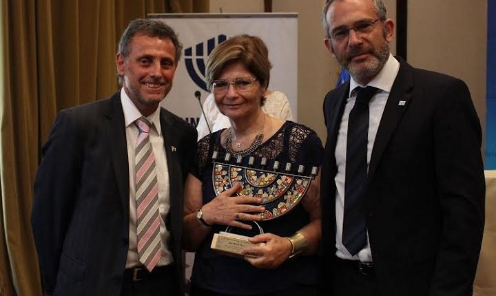

Un mito cristiano según el cual judíos tenían la costumbre de recrear la pasión de Cristo crucificando a ciudadanos griegos, imaginado originalmente por Apión. En versiones posteriores, se adaptó para acusar a judíos de asesinato de niños cristianos (siglo XI). Actualmente, el mito es más prevalente en países musulmanes, donde ha llegado a difundirse por medios de comunicación modernos.


Esta teoría sin autor conocido, que se masificó en la Rusia zarista durante el siglo XIX con el fin de justificar los pogromos realizados contra judíos por el imperio, habla sobre una conspiración judía por el dominio mundial. Durante la Revolución Rusa volvió a circular: Se persiguió a intelectuales y activistas judíos revolucionarios.
Allí, un alto cargo del imperio persa acusa a un judío (y por extensión, a todos los judíos), Mardoqueo, de tener una doble lealtad; de ser capaz de traicionar a su país. En la historia, el rey Asuero manda a exterminar a los judíos de persia.
Esta teoría de la conspiración es una adaptación de "Los protocolos", según la cual la familia Rothschild controla la banca mundial y a través de ella gobiernan por sobre las naciones. En la actualidad, sigue teniendo cierta relevancia y es una teoría esgrimida por sectores tanto de izquierda como de derecha.

Las principales teorías de la conspiración acerca de los masones son acerca de control de la política, la religión y la cultura. Como muchas de las grandes teorías de la conspiración, cargan con una tradición antisemita y anticomunista. Contradictoriamente, también hay teorías que pretenden asociar a la masonería con grupos como el Ku Klux Klan.


Los Iluminados de Baviera fueron una sociedad secreta bávara de fines del s. XVIII, promotora de ideales laicos, republicanos e igualitarios. Fue proscrita por la monarquía, que la consideró una amenaza para su gobierno y el catolicismo romano. Luego, se nombró “Iluminati” a una conspiración ficticia, asociada a la Revolución Francesa y su uso volvió a prevalecer durante el siglo XX; una élite mundial que promovería a la vez capitalismo y comunismo con el fin de dominar el globo.
En 1929, Robert E. Howard escribió un cuento titulado El gobierno en las sombras, que fue publicado en la revista Weird Tales, en el que una raza de "hombres serpiente", humanoides se infiltraban en la raza humana para influir en sus sociedades mediante control mental. La teoría conspirativa de los reptilianos se asentó en 1999, con la publicación de David Icke "El mayor secreto", donde describía, basado en el cuento de Howard, a la raza reptiliana. También sindica específicamente a ciertos grupos de poder como parte de la raza serpentil, entre otros, menciona a la monarquía inglesa y la familia Rothschild.
En 1947 un OVNI cayó a las afueras de Roswell, N. México. 30 años después, el ufólogo estadounidense S. Friedman reflotó la noticia con una entrevista al Mayor J. Marcel, único presente en el traslado de los restos del OVNI a la base militar de Fort Worth, Texas. En 1980, el National Enquirer, masificó la teoría de que el "Incidente Roswell" se trataba de un platillo volador extraterrestre. En 1995, la cadena Fox transmitió una cinta en la que se realizaba una autopsia al cuerpo de un alien, identificado como el piloto del platillo de Roswell. Si bien su creador, Ray Santilli, confesó en 2006 que se trataba de ficción, los efectos de las imágenes todavía son base de mitos y teorías conspirativas.

A partir de la década de los 50 se comenzó a desarrollar un discurso público que pretende poner en duda hechos históricos factuales, proponiendo que se trataran de mentiras difundidas a gran escala en beneficio de ciertos grupos políticos, raciales, étnicos o religiosos. El caso más notorio es el negacionismo del Holocausto nazi, con grupos organizados que acusan de ser una farsa y han llegado a conformar centros de estudios de nula credibilidad, pero grandes capitales. En Chile, Miguel Serrano fue el negacionista del Holocausto más connotado, además de nazi declarado.


Luego de que el presidente de los EEUU fuera abatido en Texas a mediados de noviembre de 1963, y de que Lee Oswald fuera asesinado días después, bulleron teorías conspirativas respecto del asesinato. Se han escrito más de mil libros al respecto, sindicando a todo tipo de organizaciones, desde un gobierno secreto hasta la CIA y el entonces vicepresidente, Lyndon B. Johnson. Miembros de la familia Kennedy han rechazado las conclusiones de la comisión Warren y Robert Kennedy Jr. ha manifestado que su padre se refería a esta como "una fabricación de pacotilla", en privado. Una encuesta realizada por CBS News en 2009 arrojó que el 76% de los estadounidenses piensan que el asesinato de JFK fue una conspiración que involucraba a más de una persona.
La Operación INFEKTION fue una campaña de desinformación mediante la cual la KGB propagó la idea de que la CIA había inventado el VIH/SIDA, como parte del desarrollo de armas biológicas en Fort Detrick.

A comienzos de los 90s, el exmédico Andrew Wakefield publicó un estudio fraudulento en la revista médica The Lancet. Allí, trazaba vínculos causales fraudulentos entre la vacuna MMR (contra el sarampión, paperas y rubeolas) y el autismo. 10 de sus 12 coautores rechazaron las conclusiones de su estudio y el diario The Sunday Times reveló que existía un conflicto de interés que no había sido declarado por Wakefield. Con el tiempo, cualquier vínculo causal entre la vacuna MMR y el autismo ha sido completamente desmentido, pero la teoría conspirativa todavía mantiene muchos adherentes, especialmente en Norteamérica.

Frente a la pandemia global de COVID-19 entre 2019 y 2021, surgieron múltiples teorías conspirativas que recuerdan a la Operación INFEKTION. Hubo quienes sindicaron al gobierno chino de haber fabricado el virus en un laboratorio, a modo de arma biológica. También, hubo quienes pusieron en duda la severidad de la enfermedad acusando a los gobiernos mundiales de manipulación con el fin de controlar a sus habitantes. Estos discursos fueron promovidos principalmente por notorios políticos de extrema derecha, Donald Trump (USA) y Jair Bolsonaro (Brasil).

Originada en 8Chan, un foro de internet convertido en un sitio virtual de conversación entre la extrema derecha joven, QAnon es descrita a menudo como “Una conspiración, todas las conspiraciones”. En la práctica, un usuario anónimo del foro, bajo el seudónimo “Q”, comenzó a desarrollar una narrativa según la cual los Clinton, Obama y otras figuras políticas y culturales relevantes formaban una organización de pedofilia y tenían la intención de derrocar al gobierno de Donald Trump.


La Agenda 2030 de la ONU es un conjunto de objetivos globales que la Organización de las Naciones Unidas propone a sus miembros. Entre otros, apunta a los problemas ambientales, de inequidad económica y de sustentabilidad. Grupos conservadores han sindicado a la agenda 2030 como una coartada para una conspiración de la ONU para promover lo que denominan “ideología de género” e instalar un gobierno mundial de izquierda progresista.
~Pizarra de Canallas, 2022.
A propósito de un rayado en el baño de la Facultad de Medicina de la Universidad Diego Portales, revisamos algunos de los personajes y episodios más importantes de la historia del anarquismo chileno y santiaguino.

Barrio universitario República. Parece incoherente encontrar un escrito de éstas características en un sector de estudiantes universitarios, en tiempos en los que...
Santiago, 2022-2023
José Miguel Leiva Gahona.

This work is licensed under a Creative Commons Attribution-NonCommercial-ShareAlike 4.0 International License